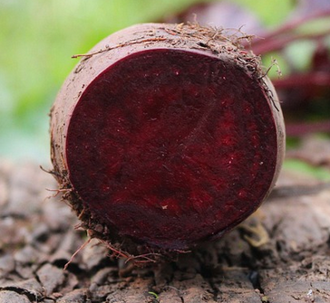

Borscht

Delicious and Nutritious Bowl of Borscht
This classic Ukrainian soup is packed with vitamins and minerals from the variety of colorful vegetables, and the beef shank or stew meat provides a great source of protein.
Ingredients
- 1 1/4 Bone-in-beef shank, lean meat
- 1 onion
- 3 garlic cloves
- olive oil
- 8 cups beef broth
- 1 teaspoons of salt and black pepper
- 1 1/2 pounds of beets
- 1 potato
- 1 pound carrots
- 2 cups of thinly sliced cabbage
- 3 tablespoons red wine vinegar
- 3 tablespoons fresh dill
- sour cream
Steps
- Heat 2 teaspoons of the extra virgin olive oil or vegetable oil in a large pot or Dutch oven over medium-high heat. Add the beef shank or stew meat and cook until browned on all sides, about 8 minutes.
- Add the chopped onion and sauté until softened, about 5 minutes. Pour in 6 cups of the beef broth or stock and bring to a boil. Reduce the heat to low and let the mixture simmer for 1 hour, covered.
- In the meantime, heat the remaining 1 teaspoon of oil in a separate pan over medium-high heat. Add the chopped beets, carrots, and potato and sauté for 5 minutes.
- Add the sliced cabbage and sauté for an additional 5 minutes until the vegetables are slightly tender but still have a nice crunch.
- Add the sautéed vegetables to the pot with the beef and broth, along with 1/2 cup of the chopped dill and the red wine vinegar. Cover and simmer for another 30 minutes, until the vegetables are completely cooked.
- Taste the borscht and season with salt and freshly ground black pepper to your liking. Ladle into bowls and top each serving with a dollop of sour cream and a sprinkle of the remaining 1/4 cup of chopped dill.
- Enjoy your delicious bowl of borscht! The tangy sour cream and fresh dill garnish add the perfect finishing touches to this comforting and satisfying meal.
This borscht recipe is a great way to enjoy a healthy and hearty meal. Packed with nutritious ingredients and bursting with flavor, it's a perfect dish for any season and is sure to become a favorite in your household.